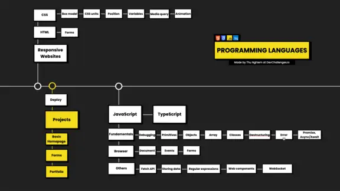

Design tools – Figma
The last tool is Figma. Figma is a design tool and is free to use for individuals. But here I want to talk about how to use Figma as a developer.
As a developer, you might get designs from designers on your team. With Figma you can inspect the code of the elements and measure the layout. Therefore, you need to know how to read Figma design, like how to get the color, typography, or spacing right.
Here’s an article about various design tools, Figma included. And here’s a fun tutorial about creating 3D sketches in Figma.
Alright, so these are the tools that you need to know of when getting started. You don’t need to know everything, but be sure that you understand the basics so that you can improve while learning to code.
Programming Languages Web Developers Should Learn

HTML and CSS
Next, let’s continue with programming languages. And let’s start off by talking about Responsive Websites.
Responsive websites are sites that look good and are usable on all devices or screen sizes. You probably know how important it is to build a responsive website, as people use so many different devices these days.
So let’s jump to the first two languages that you need to know to build a website: HTML and CSS
HTML stands for Hypertext Markup Language. It it is used to build the skeleton for your website. HTML is not difficult to learn, but you might want to pay more attention to HTML forms as they will be fundamental in the future.
CSS stands for Cascading Style Sheets. This is a markup language but I also consider it to be a programming language. CSS is not necessarily difficult to learn but it’s difficult to master.
There are few topics that you want to pay more attention to like:
- Box model – how margins, padding, and borders work together.
- CSS units – used for expressing lengths (e.g: rem, vh, and vw).
- Position – specifies the type of positioning method. It also confuses many people so make sure you spend some time on it.
- Variables – or Custom properties are entities that can be reused throughout a document. This is my favorite feature in CSS. They make working with CSS so enjoyable and you can create themes with just a few lines of code.
- Media query – decides what to show on different screen sizes. They are a key component of responsive design.
- Animation – lets an element change from one style to another. If you know how to use animation correctly, it makes your site stand out. Otherwise, it will make your website look unprofessional, so be careful.
- Flexbox, CSS Grid – used for building Responsive layouts (I forgot to mention this in the video).
Here’s a full handbook that’ll teach you all the basics of HTML. And here’s a complete course on CSS on the freeCodeCamp YouTube channel that’ll get you started beautifying your sites.
When you know the basics of HTML and CSS, the next step is to build some basic websites. For example, you can try a Homepage, a Form like a login page or a checkout page. You can even build a Portfolio. You can find example projects on DevChallenges.io
Website deployment
Once you have your website, you need to put it on the internet, so people can see it. Deployment is the process of deploying your code to a hosting platform.
Back in the day it was a lot more difficult to do. But now, it’s super easy and you can use tools like GitHub Pages, Netlify, or Vercel.
Here’s a full YouTube course on how to get your site online that covers the entire process from start to finish
JavaScript – Fundamentals
Alright, the next topic is JavaScript. JavaScript is a popular programming language and is widely used for Web Development, among other things.
You will need to learn some of the basic features of the language like Data Types, Loops, and Conditionals.
Then there are topics that you will want to dive deeper into.
First, we have debugging. This is the process of finding and fixing errors. Here’s a great in-depth guide to bug squashing to get you started.
Then there are other topics like Objects, Primitives, and Arrays. Especially when working with Arrays, you need to know about Array methods as well.
Functions are the main building blocks in your program. So make sure that you don’t overlook them.
One of my favorite features in JavaScript is de-structuring – it is easy to write and makes the language super powerful.
Like C#, Java, or other programming languages, in modern JavaScript we also have classes. These are useful when it comes to Object-Oriented Programming and the SOLID principles.
And no matter how good you are with programming, you will have errors in your scripts. This means you’ll want to know about Error handling as well.
Asynchronous programming is important, especially when you need to communicate with the server. So spend some time learning about Promises and Async/Await
JavaScript – Browser
Let’s move on to how JavaScript is used in the browser.
First, you need to know what a Document Object Model or DOM is. Then you need to know how to get elements, how to change the classes, or how to change the style with JavaScript.
Here’s a good introduction to the JS DOM, and here’s a guide on how to manipulate the DOM (you’ll learn by building a project).
You also need to learn about different User Interface Events like click, mouse over, mouse down, and so on.
And, you’ll also want to pay more attention to Forms in JavaScript as they have many events and properties
JavaScript – Other features
The Fetch API is an important topic. It lets you send network requests to servers. This is useful, for example, when we need to submit a form or get a user’s information.
Another important topic is Storing Data in the browser. Here you need to know what the differences are between Cookies, LocalStorage, and sessionStorage.
Other less important topics when you are just getting started are Regular expressions, Web Components, and Websockets.
Regular expressions are used to search and replace text. Web Components, are a new thing but you should totally check them out.
Lastly, we have Websockets. They are useful when you need to have continuous data exchanges like in chat applications.
So after learning Javascript, you might want to spend some time to learn about TypeScript. I love TypeScript as it gives me a safe feeling while writing code.
TypeScript provides static typing, that allows you to catch errors earlier in the debugging process. It also saves your time as it finds bugs before the code runs
Here’s a helpful post on TypeScript types to help you think about them the right way.
You can stop here and start working on some projects. But personally, I would continue by learning at least one framework. Then you can practice JavaScript at the same time.
Alright, so let’s move on.